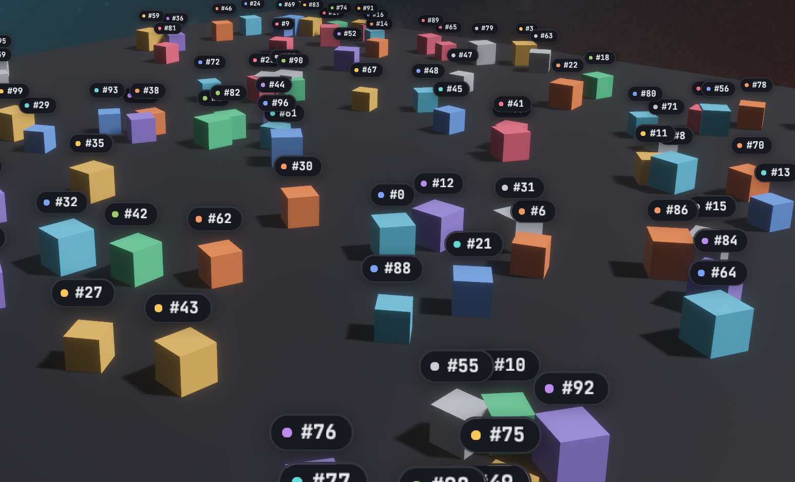

<anchor>
<anchor> pins a UI subtree to a 3D entity. Every frame it projects the
entity's world position through the UI camera and centers itself on that
point, so labels, nameplates and health bars follow objects as they and the
camera move. It stays an ordinary screen-space node: flat, styled like
<node>, and fully interactive.
Usage
React needs the entity's id, Entity::to_bits(), from the Bevy side. Here a
request asks for it:
TSX
import { useEffect, useState } from "react";
import { bevy } from "./bevy";
function PlayerLabel() {
const [player, setPlayer] = useState<bigint | null>(null);
useEffect(() => {
bevy.player.entity().then(setPlayer);
}, []);
if (player === null) return null;
return (
<anchor entity={player} offset={[0, 2, 0]}>
<text>Player 1</text>
</anchor>
);
}Rust
use bevy::prelude::*;
use bevy_react::prelude::*;
#[derive(Component)]
struct Player;
#[react_request(name = "player.entity", response = u64)]
struct PlayerEntity;
fn player_entity(
req: On<Request<PlayerEntity>>,
player: Query<Entity, With<Player>>,
) {
match player.single() {
Ok(entity) => req.respond(entity.to_bits()),
Err(_) => req.respond_err("no player"),
}
}
// app.add_react_request_handler(player_entity);An event works as well, for example one listing every spawned unit with its
entity.to_bits() (see Bevy to React).
<anchor> comes from the anchor cargo feature, which is on by default and
adds AnchorPlugin to ReactPlugins. Without it, an <anchor> mounts as a
plain node and reports a featureMissing warning (see
Cargo features).
Attributes
| Attribute | Type | Default | Effect |
|---|---|---|---|
entity |
number or bigint |
required | The entity to follow, as Entity::to_bits() |
offset |
[x, y, z] |
[0, 0, 0] |
World-space offset added to the entity's position |
scale |
AnchorScaling |
none | Scale the overlay with camera distance |
All three are plain props: change them from React state and the anchor follows the new values.
Positioning
- The anchor point is the entity's
GlobalTransformtranslation plusoffset, in world units. Useoffsetto lift a label above a model's origin. - The point is projected through the camera marked
IsDefaultUiCamera, or, if none is marked, the first camera found. Mark your main camera when the app has several, including<portal>cameras and<surface>cameras. - The overlay is centered on the point using its own laid-out size, and is positioned after animations and transitions run, so it tracks the entity in the same frame. Moving it never re-runs layout.
- The overlay is hidden while the entity doesn't exist (not spawned yet,
despawned, or an invalid
entityvalue) and while the point is behind the camera or beyond its far plane. A point off to the side of the screen keeps the overlay positioned off-screen. A new anchor is also hidden until its first layout, so it never flashes at the wrong place.
Distance scaling
scale takes { min, max, factor, baseDistance } and scales the overlay
around its center by
clamp(1 + factor * (baseDistance / distance - 1), min, max), where
distance is from the camera to the anchor point, in world units. The
overlay is at scale 1 when the camera is baseDistance away, grows as the
camera comes closer and shrinks as it moves away. A factor of 0 disables
scaling, 1 is true perspective (half the size at twice the distance), and
2 scales twice as fast. Without scale, the overlay keeps its size.
<anchor
entity={player}
offset={[0, 2, 0]}
scale={{ min: 0.4, max: 2, factor: 1, baseDistance: 20 }}
>
<text>Player 1</text>
</anchor>A non-finite field disables scaling with a log warning; a min greater than
max is swapped.
Layout and styling
<anchor>takes everything<node>does:style,hoverStyle,pressStyle,focusStyle, pointer handlers,onWheeland the scroll props. Its children lay out inside it as usual, and it sizes to its content.- It doesn't take part in its React parent's layout: it takes no space
there, isn't clipped by the parent's
overflowand doesn't extend its scroll range. Write it anywhere in the tree; unmounting the parent removes it. - Anchors live in their own UI root at the window's top-left, drawn beneath
the app's other UI roots. Give an
<anchor>aglobalZIndexto draw it above them (see Z-index). - The anchor owns its position:
positionType,leftandtopare overridden, and so aretranslateX,translateY,scale,scaleXandscaleYin itstransformstyle, static, transitioned or animated.rotateworks. Put other transforms on a child. - Clicks and hover work as on any node.
Limits
- No occlusion: an overlay stays visible when its entity is hidden behind other geometry.
- Only the position is followed. The overlay doesn't rotate or skew with the entity.
- Overlays follow one camera and appear only on the main screen, not in portals or surfaces.
entitycrosses as a JS number, exact below 2^53, which covers realistic Bevy entity ids.

See <anchor> in the element reference.